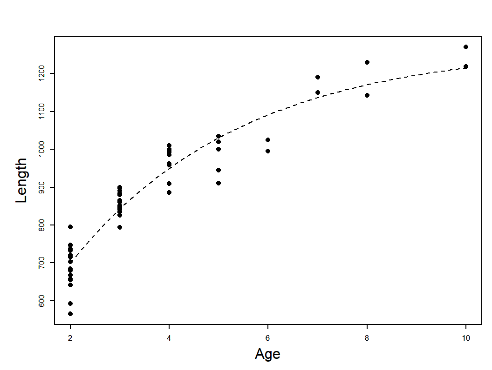
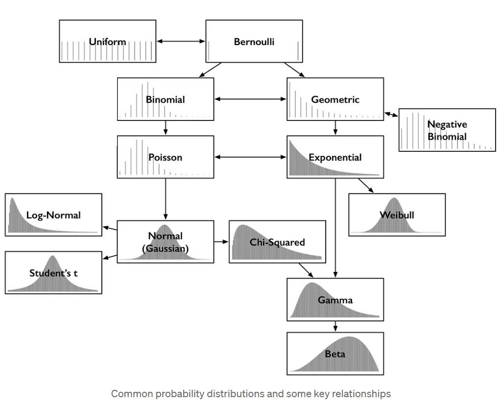
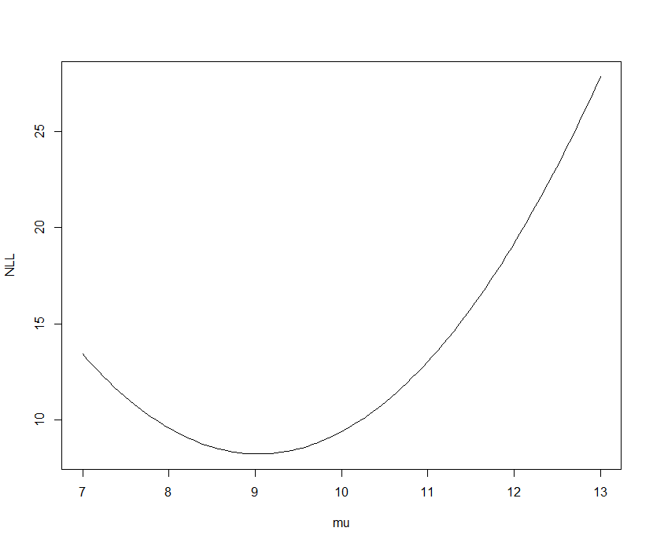

Software tools for Maximum Likelihood Estimation
TMB through RTMB
Click here to view presentation online
22 November 2023
Outline: Part I
- Introductions
- Syllabus and my assumptions on background
- Course organization
- Philosophy and approach
- Expectations
- Break
Course intro
- Welcome
- Housekeeping
- Zoom, github, lecture recordings, communication, etc.
- Round-table introductions
- Background, why are you here
Syllabus
- Everything through Github
- Syllabus, presentations, code
- If you need help:
Course organization
- Each class is 2.5 h on zoom
- Each class session will be a mix of lecture and work on exercises
- Exercise work will be in breakout rooms
- No formal homework but you may need to review/complete in class exercises between classes
My assumptions about your background
- Some previous experience with statistics including basic idea of fitting models to data
- Some previous use of R
- Some programming (understanding of functions, loops, conditional statements)
- Experience interpreting graphs
- You can get by without all this background, but you should expect to put in more time
My background
- BS in Biology University of Notre Dame
- PhD in Ecology and Masters in Statistics at Univ CA, Santa Barbara (both
- Worked on evaluation of environmental effects of San Onofre Nuclear Generating Station 1985-1989
- Mathematical Statistician (Stock Assessment Scientist) at NMFS-NOAA Tiburon Lab 1989-1994
- Faculty member at Michigan State University 1994- (retired from tenure stream position July 2023 - currently part time)
My philosophy on statistical modeling
- Cookbook solutions rarely are adequate for real quantitative problems needed in ecology and resource management
- In class we will solve simple problems the hard way
- This will make solving hard problems easier and position you to produce better solutions (Royle and Dorazio 2008)
- If you cannot write out your model you don’t know what you did!
- Don’t get lost in coding.
- A good model you understand is critical.
Software, implementation, website
- We are primarily going to use R and RTMB
- Recommend Rstudio
- Lectures and code will be available through GitHub
- You do not need to know how to use GitHub, but that is where you can find code and presentations


What is RTMB, why use it?
- R package for maximum likelihood fitting of arbitrarily complex models that incorporate random effects
- Nonlinear and non-normal models (within reason!)
- RTMB uses Template Model Builder (TMB) and TMB was inspired by AD Model Builder (ADMB)
What is RTMB, why use it? A peak under the hood
- Automatic differentiation (ADMB and TMB)
- Laplace approximation to integrate out random effects (ADMB and TMB)
- Automatic identification of parts of models that are connected (TMB)
- TMB is much faster for models with random effects
- No need for C++ coding (RTMB)
- Major limitation – likelihood must be differentiable function of parameters and RTMB must “see” all the calculations in R
Expectations
- Be kind
- Make an honest effort to learn this stuff
- Share your code
- This course lies at the intersection of mathematics, statistics, ecology, and numerical computing
- Failure is okay and to be expected
Some disclaimers
- Maximum Likelihood Estimation is powerful but not without drawbacks and limitations
- This is not a mathematical statistics course
- I don’t know everything
- I will do my best to track down answers
- Please ask questions
Outline: Part II
- Overview of statistical modeling and MLE
- Building blocks
- Probability, events, and outcomes
- Random variables and random variates
- Discrete versus continuous
- Probability mass and density functions
- Some common distributions
- The Likelihood function and maximum likelihood estimation
A brief introduction to statistical modeling
- This class is about model-based inference
- Focus on the development of arbitrarily abstract statistical models
- These models always contain:
- Deterministic (i.e., systematic) components
- Random (i.e., stochastic) components
- We estimate model parameters - can be of direct interest, or used to calculate something of interest
- We are interested in uncertainty of estimates (SEs and CIs)
Several example statistical models
- Regression model
- Hierarchical linear model
- Complex age structured assessment model
Regression model example
\[ y_{i}=f(\underline{\theta}, \underline{X})+\varepsilon_{i}\\ L_{i}=L_{\infty}\left(1-e^{-K\left(a_{i}-t_{0}\right)}\right)+\varepsilon_{i} \]

Data: T. Brenden unpublished. Photo: E. Engbretson, USFWS https://commons.wikimedia.org/w/index.php?curid=3720748
Hierarchical linear model example
- Weight is power function of length multiplied by error
- On log scale the relationship is linear with additive error
- i represents ponds, j fish within ponds
- Intercept and slope vary randomly among ponds, residual variance is pond specific
- Y~N(a,b) means Y is normal, with mean a and variance b \[ \begin{array}{c} \log W_{i j}=a_{i}+b_{i} \log \left(L_{i j}\right)+\varepsilon_{i j} \\ a_{i} \sim N\left(\alpha, \sigma_{a}^{2}\right), b_{i} \sim N\left(\beta, \sigma_{b}^{2}\right), \varepsilon_{i j} \sim N\left(0, \sigma_{i}^{2}\right) \end{array} \]
State Space Catch at age model
\[ \begin{array}{l} \log N_{4, y}=\log N_{4, y-1}+ \\ \varepsilon_{y}^{(R)} ; \varepsilon_{y}^{(R)} \sim N\left(0, \sigma_{R}^{2}\right) \\ \log N_{a, 1986}=\log N_{4,1986-(a-4)}- \\ \sum_{4}^{a-1} \log \bar{Z}_{a}, 4<a \leq 9 \\ \log N_{a, 1986}=0, a>9 \\ \log N_{a, y}=\log N_{a-1, y-1}-Z_{a-1, y-1}, \\ 4 \leq a<A, \log N_{A, y}= \\ \log \left(N_{A-1, y-1} e^{-Z_{A-1, y-1}}+N_{A, y-1} e^{-Z_{A, y-1}}\right) \\ Z_{a, y}=M+\sum_{G=g, t} F_{a, y, G} \end{array} \]
State Space Catch at age model (continued)
\[ \begin{array}{l} F_{a, y, G}=q_{a, y, G} E_{y, G}, G=g, t \\ \log q_{y, G}=\log q_{y-1, G}+\varepsilon_{y}^{(G)} ; \varepsilon_{y}^{(G)} \sim \\ N\left(0, \Sigma_{G}\right), G=g, t \\ \boldsymbol{\Sigma}_{a, \tilde{a}}=\rho^{|a-\tilde{a}|} \sigma_{a} \sigma_{a}, 4<a \leq A, \\ 4<\tilde{a} \leq A \\ B_{y}^{(S p a w n)}=\sum_{a=4}^{A} m_{a, y} W_{a, y}^{(s p a w n)} \log N_{a, y} \\ C_{a, y, G}=\frac{F_{a, y, G}}{Z_{a, y}} N_{a, y}\left(1-\exp \left(-Z_{a, y}\right)\right), \\ \end{array} \]
Probability
Whole books about definitions and meaning.
I follow a frequentist definition for intuition, while recognizing that there is some logic to Bayesian claims of degree of belief
Frequentist definition: The long run proportion of of times an event occurs under identical conditions
Statisticians sometimes distinguish outcomes from events. Outcomes are really elementary events. Event might be catching a fish in 7 to 8 inch bin, outcome would be catch a fish and measure its length.
Basic properties (axioms) of probabilities
The sum of probabilites over all possible mutually exclusive events is 1.0 (So something will happen)
Probability of any given event is \(\geq\) 0 (and \(\leq\) 1)
The probability of the union of mutually exclusive events is the sum of their separate probabilities
- \(P(A \cup B)=P(A)+P(B)-P(A \cap B)\)
if A and B independent \(P(A \cap B) = P(A)P(B)\)
Conditional probability
\[ P(A \mid B)=\frac{P(A \cap B)}{P(B)} \]
“|” read as “given or conditional on – Probability of A given B
Conditional probabilities recognize that the occurence of event B can provide information on whether event A will occur
Convince yourself that \(P(A \mid B)=P(A)\) if A and B independent
Conditional probability

stats.stackexchange.com/questions/587109
Random variables (words)
Technical definition is that they are functions that convert probability spaces for events/outcomes to numeric results.
- Ironically they are neither random nor variables!
Less technically (but still techno speak!) they describe the numeric outcome of a random process. I.e., they are not a number (or vector/matrix of numbers) but rather the process of producing them.
A random variate is a particular numeric outcome
Text books say usually capital letters used for random variables and lower case for random variates.
Random variables: math expression for simple example (coin flip)
We flip a coin and call a heads 1 and a tails 0:
\[ \text{suppose } p=\operatorname{Pr}(Y=1) \\ \operatorname{Pr}(Y=1)+\operatorname{Pr}(Y=0)=1 \\ \operatorname{Pr}(Y=0)=1-p \]
- Pr = probability
- We could say the random variable Y has a Bernoulli distribution
Bernoulli probability mass function (pmf)
\[ \operatorname{Pr}(Y=y)=p^{y}(1-p)^{1-y} \]
The pmf (or pdf) is a function that calculates the probability given the random variate (\(y\) value) and the parameter(s) (here \(p\))
\(y\) is observed datum
- pmf for discrete outcomes
If this was a continuously distributed random variable we would use probability density function (pdf)
pmf and pdf notation
- A conventional notation for this stuff is
\[ f(y \mid \theta) \]
- Sometimes with subscript for random variable: \(f_Y(y \mid \theta)\)
- often just: \(f(y)\)
- Conditional bit indicates that the probability of an observed value \(y\) depends on parameter(s) \(\theta\) used to specify the distribution of the random variable \(Y\)
- Notation for Benouilli random variable: \(f(y \mid \theta)=p^{y}(1-p)^{1-y}\)
Some common statistical distributions

More notation notes for everyone’s sanity
In general I will provide the pmf (or pdf) expressed as a function of \(y\) and the parameters of the distribution.
For example, will use \(y\sim \mathrm{N}(\mu, \sigma^2)\) to indicate a random variable \(Y\) is normally distributed with mean \(\mu\) and variance \(\sigma^2\)
In general regular font for scalars, bold for vectors and matrices
More notation
- You might see it this way too:
\[ \operatorname{Normal}(y \mid \mu, \sigma^2)=\frac{1}{\sqrt{2 \pi} \sigma} \exp \left(-\frac{1}{2}\left(\frac{y-\mu}{\sigma}\right)^{2}\right). \]
Discrete versus Continuous random variables
Discrete means the set of possible outcomes is countable with each possible value having an associated probability (calculable from the pmf).
Continuous means not countable (generally this means there are infinite numbers of possible values between any two other possible values). Pr(y) for any particular y is 0. So we use a probability density function.
Intuition/common sense sometimes used to choose between the two. E.g., catch or CPUE often modeled as continuous
Probability density function

Pr(\(c_1\))=Pr(\(c_2\))=0 !
Area under the pdf function gives probability for interval
Pr(\(c_1<x<c_2\))=Pr(\(x<c_2\))-Pr(\(x<c_1\))
Cumulative distribution function
F(x)=Pr(X<x)
For continuous variables, the derivative of F(x) with respect to x is f(x) (the density)
- Why? Does this make sense?
Joint probability density and mass functions
Vector of observed values, with elements having the same pdf/pmf or different ones and these random variables might be independent or not: \(f(x_1,x_2,...,x_k)=f(\mathbf{x})\)
Special case of each element representing an independent random variable: \(f(\mathbf{x})=f_{X_1}(x_1)f_{X_2}(x_2)...f_{X_k}(x_k)\)
Special special case of independent and identically distributed (iid) random variables: \(\mathbf{f}(\mathbf{x})=f(x_1 \mid\theta_1)f(x_2 \mid \theta_2)...f(x_k \mid \theta_k)=\Pi_{i=1}^{i=k} f\left(x_{i} \mid \theta_{i}\right)\)
These special cases very important for practical MLE work!
The likelihood function
No new math!!!
The likelihood function is just the joint pdf re-expressed as a function of the parameters: \(f(\mathbf{\theta}|\mathbf{x})\)
Maximum likelihood estimation
Adjust \(\mathbf{\theta}\) until \(f(\mathbf{\theta}|\mathbf{x})\) is maximized
The rest is “just” details :->
A numerical example
- x ={10.72,7.23,10.07,8.62,8.55}
- Each observation (x) independent from a common normal distribution with mean 10, variance 2 (i.e., they are iid)
- Calculate the likelihood of these data, i.e., f(10.72)f(7.23)f(10.07)f(8.62)f(8.55) using R
- Hints. The result is just a single number. You can calculate the pdf of f(x) for a normal distributionin R using the dnorm function. The dnorm function uses sigma (SD) not sigma squared (variance)
- Time permitting - generalize as R function to calculate likelihood for any vector x, mean, variance.
Working with the log likelihood (prefered for numerical reasons)
Perhaps obviously, if you adjust parameters to maximize the log of the likelihood function this will also maximize the likelihood.
RTMB and most software minimizes the negative log likelihood rather than maximizing log likelihood (convention)
Working on the log-scale improves numerical performance.
- The joint log likelihood for independent observations is the SUM (rather than product) of the individual log f(x) values
Negative log likelihood versus mu for five iid observations from a Normal distribution (known variance of 2)
The regression case
- Observations assumed independent but not identically distributed.
- The mean varies among observations and in this simple case variance is same for all observations: \(y_i\sim \mathrm{N}(\mu_i, \sigma^2)\)
- Cannot estimate mean as a parameter for every observation
- But can calculate it as function of parameters, e.g, : \(\mu_{i}=\alpha+\beta X_{i}\)
- general message estimated parameters are not the same as the distributional parameters for the pdfs/pmfs
- What are the model parameters?
Psuedocode for the regression problem
Specify \(\alpha\), \(\beta\), and \(\sigma^2\)
Calculate \(\mu_i\)
Calculate NLL
Search over different values of \(\alpha\), \(\beta\), and \(\sigma^2\) and repeat 1-3 until you find the values that minimize the NLL
Two ways to frame the regression model
\[ \begin{array}{l}y_{i}=\mu_{i}+\epsilon_{i}=\alpha+\beta * X_{i}+\epsilon_{i} \\\epsilon \stackrel{i i d}{\sim} N\left(0, \sigma^{2}\right)\end{array} \]
- Previously we modeled mean, which was a distributional parameter. Now we write a model for the individual observations. We can write the likelihood in terms of the errors, or the observations - The two are equivalent!
- Note but don’t worrying about. The standard model notation uses random quantities on the RHS but specifies the random variate on the LHS
Finding the MLE
Analytical solution (involves derivatives)
Grid search
Iterative searches
Non-derivative methods
Derivative methods (such as quasi-Newton)
Role of derivatives in finding MLEs

NLL as function of single parameter with derivatives
Derivatives of NLL with respect to parameters zero at minimum
Second derivatives of NLL with respect to parameters are positive at minimum
Grid search exercise
For the sample of five observations we used before find the MLE estimate of the mean assuming the variance known equal to 2 by conducting a grid search
Time permitting find MLE estimates of both the mean and variance at the same time by grid search
Properties of MLEs
Terminology: ML Estimator versus ML Estimate
Ideal estimator is lowest variance among unbiased estimators
MLE not guaranteed to do this!
MLEs are consistent, meaning estimates will become closer to correct values and sample sizes increase
- Asymptotically unbiased
Errors get smaller with more data
Familiar example of bias for an MLE
MLE for variance of normal random sample: \(\hat{\sigma}^{2}=\sum\left(x_{i}-\hat{\mu}\right)^{2} / k\)
Expected value: \(E(\hat{\sigma}^{2})=\frac{k-1}{k} \sigma^{2}\)
Standard (unbiased) estimator: \(\hat{\sigma}_{u}^{2}=\sum\left(x_{i}-\hat{\mu}\right)^{2} /(k-1)\)